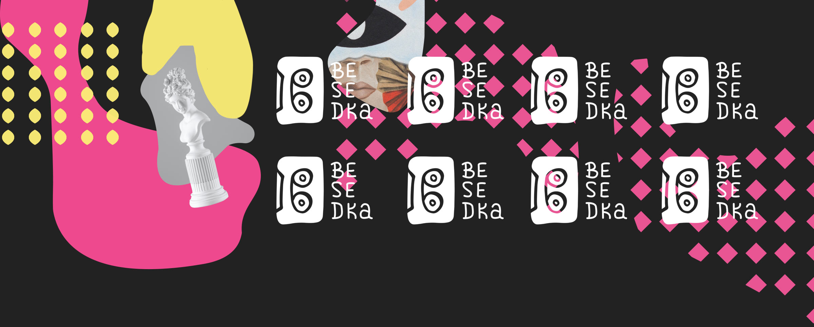
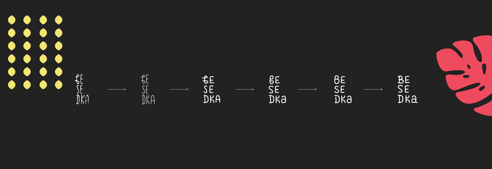
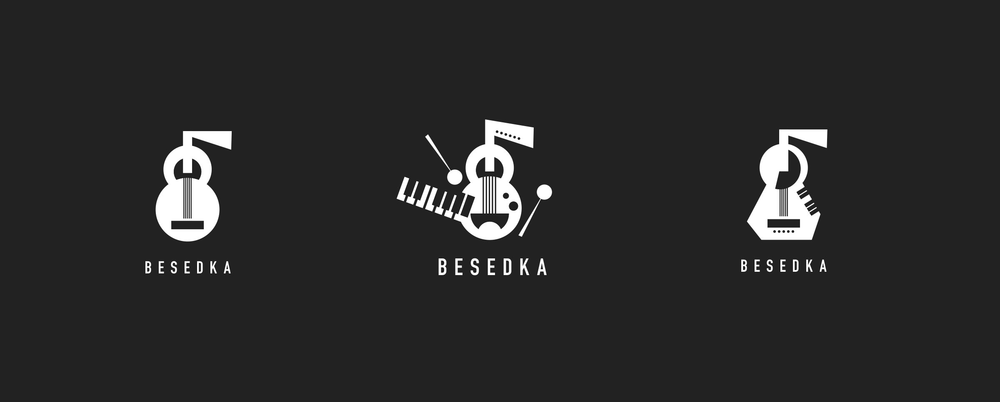
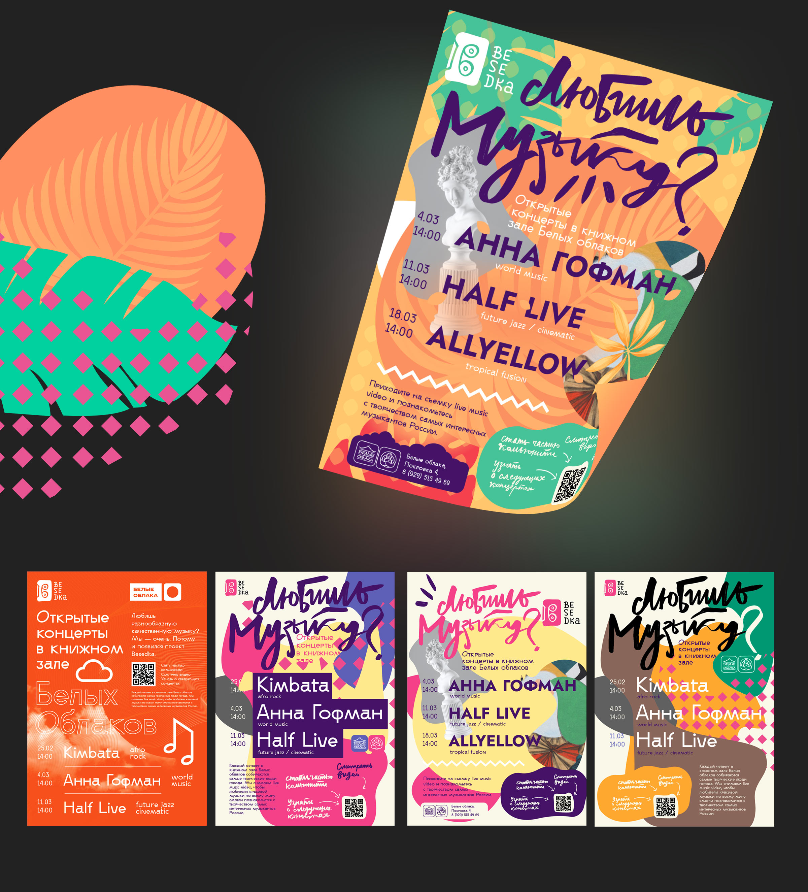

Главное пожелание — нарисованный от руки логотип.
Так в качестве основного знака была использована аудио-кассета, в которой читается буква B.

Конечно же, как и всегда, параллельно я предлагаю альтернативные варианты логотипа

Так же для Беседки был разработан постер формата А3
